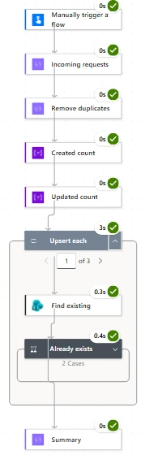
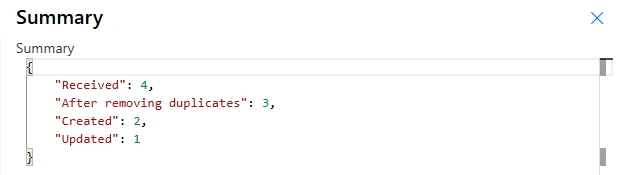

- Power Automate
- Level 8 · Real-world patterns · 1 of 8
Upsert and duplicate checks
Data from emails, forms or files often contains records you already have, and sometimes the same record twice. Creating a new item every time fills the list with copies.
Four records in, three handled, no copies
WhatRemove duplicates from the input, then for each record: find it by a business key, update if found, create if not (upsert).
WhyRunning the flow again then changes nothing extra, so it's safe to retry.
DemoFour incoming requests: Standing desk twice, Monitor arms (x6) already in the list.
Dedupe, then upsert
Incoming: 4 requests
Remove duplicates:
union(x, x) → 3For each: Find existing (Get items,
Title eq '…')Already exists?
Yes
Update item
No
Create item
What happened to each request
| Request | Duplicate? | In the list? | Action |
|---|---|---|---|
| Standing desk | yes (2 copies) | no | created once |
| Monitor arms (x6) | no | yes | updated |
| Third request | no | no | created |
Received 4 → 3 after dedupe → 2 created, 1 updated.


Removing duplicates in one step
union(outputs('Incoming_requests'), outputs('Incoming_requests'))| Piece | What it does |
|---|---|
union(a, a) | Combines a list with itself; exact duplicates appear once. |
Works for exact copies. For “same key, different details”, dedupe on the key with a lookup object instead.
The upsert lookup
Title eq '@{replace(items('Upsert_each')?['Title'], '''', '''''')}'| Piece | What it does |
|---|---|
Title eq '…' | Find the item by its business key. |
replace(..., '''', '''''') | Doubles any apostrophe (O'Brien) so the OData filter doesn't break. |
Watch out
- Use a real business key (order number, email), not the title, when you have one.
- Run it twice: the second run should update everything and create nothing.
New to this? Start from the basics optional
Business key: the value that identifies a record in real life.
Idempotent: running it again gives the same result.
Common mistakes
- Create without checking first.
- Not escaping apostrophes in filters.
- Deduping on whole objects when only the key matters.